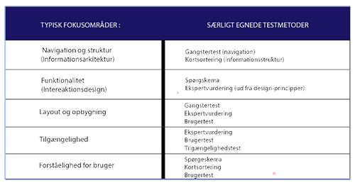

USABILITY
Når man laver en hjemmeside, er det en god ide at teste om den fungerer på optimal vis set fra brugerens synspunkt. Det kan man finde ud af ved at foretage forskellige tests, hvor typiske brugere af hjemmesiden bliver sat til at bruge hjemmesiden, samtidig med at deres handlinger iagttages af den som varetager testen. Det kaldes usability. Der er andre måder at foretage denne test af hjemmesider på. Meningen med usability er at optimere hjemmesiden, sådan at dens formål indfries på bedst mulige vis. Usability kan også bruges til test af apps
Kort sagt: At systemet reagerer og fungerer som en bruger i målgruppen vil forvente.
HVAD BETYDER FUNKTIONALITET?
• Hvis en hjemmeside ikke fungerer som brugeren ønsker, så vil brugeren søge efter andre hjemmesider. Derfor skal de forskellige funktioner på hjemmesiden fungere nemt, ellers kan det gå udover hjemmesidens succes.
HVAD ER BRUGERTILFREDSHED?
• Det er oplevelsen af en website. Det handler ikke nødvendigvis om hvordan et website rent faktisk bruges, men lige så meget om hvordan det føles at bruge. Websitet skal fungere optimalt, så man ikke vil vælge det fra, til fordel for andre lignende websites.
HVAD ER UNDERSØGELSESDESGIN
• At beskrive formålet med undersøgelsen af hjemmesiden
• Måden undersøgelsen foregår på er også en del af undersøgelsesdesignet.
HVAD ER USABILITY - KRITERIER TIL WEBSITES?
• Det omhandler den kvalitet i brugen, altså hvordan websitet bruges, som produktet skal opnå. Der er interne og eksterne kriterier:
• Interne: De krav ejeren af websitet stiller til sig selv, og til sit produkt.
• Eksterne: De krav der afgør om brugere oplever websitet som brugervenligt, sammenlignet med andre websites.
HVAD ER SKISTER OG PROTOTYPER
• En skitse skal fungere som en hurtig og lettilgængelig visualisering (billede) af en ide.
• En prototype er en foreløbig udgave af et produkt, som fremstilles, inden der påbegyndes en egentlig produktion af det.
• Vi bruger skitser og prototyper til, at dele vores forståelse til de øvrige deltagere af projektet.
HVORFOR OG HVORDAN DOKUMENTERES RESULTATER AF TESTS
• Resultaterne skal dokumenteres i en relevant form. Det kan f.eks. være som en model, en præsentation eller som en rapport
• Man skal se på hvem modtageren er og gøre det så relevant som muligt for dem.
Usability s/ 14-25
Hver testmetode har særlige styrker inden for bestemte fokusområder. Her i skemaet er der vist nogle fokusområder og hvilke testmetoder der passer til undersøgelsens fokus.

Usability s/ 26
GANGSTERTEST
”Navigationen er ikke en funktion på et website – det er websitet”
Steven King
Navigationen er kernen af et website. Det er redskabet for at benytte sig til at komme rundt på et website og dermed finde den information, man leder efter og dette afhængig af navigationen på dit website. Gangster testens formål er at teste websitets informationsarkitektur.
Det er gangske nemt at udføre gangstertesten. Det gør man ved at placere test-brugeren på en underside på et website, og stiller en række spørgsmål:
- Hvilket website er du på?
- Hvor er websitets globale menu?
- Underside: Hvilken underside er du på?
- Hvilke muligheder har du på denne side?
- Hvordan er du kommet hertil?
- Hvor kan du søge?
(Website ID: Se efter logo eller anden identifikation af afsenderen)
(Global menu: Se efter den overordnede menu på websitet)
(Underside: Se efter undersidens titel)
(Muligheder: Undermenuer, links, downloads, video, øvrige funktioner)
(Placeringsindikator: Se efter brødkrummesti, overblik i navigation, markering af aktuel placering)
(Søgefunktionen: Er søgefeltet let at finde?)
Testen har i alt 13 points, hvert spørgsmål tildeles mellem 0-3 point. Scorer man 18 points, så vil det betyde at navigationen understøttes godt
Usability s/ 42-49
SPØRGESKEMA
Metoden er særlig velegnet til at undersøge holdninger hos en bestemt målgruppe. Spørgeskemaundersøgelse er et godt udgangspunkt for en kvalitativ undersøgelse. Undersøgelse af hvor meget, hvor mange, hvor ofte eller lignende, er primært for spørgeskemaer.
Det er os, der skal bestemme, hvem der er målgruppen for spørgeskemaundersøgelsen… Er det de brugere som over en bestemt alder? Eller helt tredje slags brugere?
Spørgeskemaets reelle formål er at finde ud af, hvorfor bruger gør, som de gør, hvilke oplevelser brugeren få, og hvordan brugerne bliver påvirket af det.

Usability s/ 50-53
EKSPERTVURDERING
Ekspertvurdering er en systematisk måde at gennemgå et website på. Det bruges til at vurdere websitets kvalitet i brugen.
Ekspertvurderingen kan udføres ved at en eller flere eksperter, hvor de prøver at finde de potentielle usability-problemer, der findes på et website. Det lykkes måske ikke altid at finde alle fejl og mangler, dog er det en enkel og effektiv måde at evalueringer af websites.
Men hvorfor ikke en brugertest eller spørgeskemaer, fremfor ekspertvurdering?
At gennemføre en ekspertvurdering, er langt billigere og mindre ressourcekrævende.
Der er to slag eksperter. Det ene er ekspert er ” dig ”, med lidt øvelse med hvad du skal kigge efter, kan du sagtens udføre testen selv.
Den anden type ekspert, kan være en ekspert fra fagområdet. Det vil sige en person, som har nogle kendskab til:
Den information og de servicer, som websitet vil tilbyde,
Den kontekst, som websitet vil blive benyttet
De bruger, som vil benytte websitet…
Usability s/64-65
KORTSORTERING
”Navigationen er ikke en funktion på et website – det er websitet”
Steven King
Kortsortering bruges til at evaluere strukturen i et website. Det handler om brugeren kan nemt bevæge sig rundt ind på siden, uden at misforstå undersider, begreber eller titler. Det skal give mening med menupunkter, knapper og hvordan elementerne er sammensæt.
Testen forgår dog ikke på et teknologisk apparat. Testdeltageren skal sortere ved hjælp af papkort og dermed danne grupper af elementerne.
Der er to typer af kortsortering…
Åben og lukket kortsortering, og de udføres baseret på den type website, der udvikles.
Den åbne test udføres i disse tre trin:
- Testdeltageren får udleveret et kort ad gangen og bedes om at lægge kortene sammen i grupper på bordet efter den umiddelbare forståelse eller oplevelser af kortets betydning.
- Når alle kort er placeret i grupper på bordet, bedes testdeltageren om at give hver gruppe af kort en overskrift
- Afslutningsvis bedes testdeltageren fortælle om de overvejelser og udfordringer, der var ved at gennemføre testen. Man kan desuden spørge til observationer, som man har gjort sig undervejs.
Den lukkede test udføres i disse tre trin:
- Testdeltageren lægger kortene med overskrifter for de eksisterende grupper på bordet i en række med lidt afstand imellem.
- Her får testdeltageren ligeledes udleveret et kort ad gangen, men bedes lægge kortet i en af de etablerede grupper efter den umiddelbare forståelse af kortets og gruppens betydning.
- Afslutningen er ens. Testdeltageren bedes fortælle om de overvejelser og udfordringer, der var ved at gennemføre testen. Man kan desuden spørge til observationer, som man har sig gjort undervejs.
-usability s/ 86-91
https://peytz.dk/saadan-faar-du-et-godt-sitetrae/ (billederne)
BRUGERTEST
Brugertesten kaldes også brugervenlighedstesten og den mest anderkendte usability-testmetode. Formålet med brugertesten er at undersøge om brugerne kan finde rundt i websites indholdsstruktur, at forstå sproget, navigationen og hvordan brugerne anvender funktionerne.
Udførelsen af brugertest metoden, typisk gennemføres med ” tanke højt ” metoden. Metoden handler om at testpersonen skal fortælle alle sine tanker, overvejelser mens testen forgår
Brugertesten giver os viden om hvad brugerne rent faktisk gør.
- Ikke bare hvad de fortæller os, hvad de gør.
Eksempel fra bogen
Opgave: Find karakter på legeplads i Valby
Mål-problemstilling:Bruge søgefunktion og læse skala og kommentarer fra andre brugere.
Opgavens trin, optimalt:
- Klik på søg attraktion
- Vælg Storkøbenhavn som område, eller vælg København på kort
- - Find Valby Naturlegeplads på resultatliste
- Klik på ” kommentarer fra andre brugere ”
- Se vurdering og kommentarer
- Aflæs karakter på skala
Alternativ (bruger søgefelt)
- Skriv ” Valby” i søgefeltet
- Søgning giver 43 muligheder ” Valby Naturlegeplads ” er nummer 5
- Vælg ” Valby Naturlegeplads
- Klik på ”kommentarer fra andre brugere ”
- Se vurdering og kommentarer
- Aflæs karakter på skala
Tidsramme (evt.eksperttid)Minimum 6 klik
Opgavetekst: Du har hørt om en legeplads i Valby, som skulle være god. Find legepladsen på websitet, og undersøg, hvordan andre har vurderet den legeplads, du finder. Noter, hvilken karakter denne legeplads har fået af andre brugere.
Noter: Bemærk, at kortet til valg af område er en særlig vigtig feature at få vurderet
Usability s/ 96-101
TILGÆNGELIGHEDSTEST
Tilgængelighed i det tilfælde har at gøre med brugeroplevelsen. Bruger har forskellige formodning for at bruge et website. Det handler om digitalt udfordrede brugere med handicaps eller folk der har udfordringer med at bruge bestemte funktion på grund af særlige manglende evner såvel som at føle, syns, forstå eller høre.
Der kan dog være forskellige ting at tale om når det handler om tilgængelighed på et website. Websitet skal være i stand til at bruges via uanset hvilken apparat såsom smartphones, tablets, tv-skærm osv. Desuden browser, skærmopløsning eller hvor god internetforbindelse man har også en stor betydning når vi taler om tilgængelighed.
Usability s/ 116-117
PILOT-TEST
Pilot-test er en test af testen. Pilot-testen bruges til at vurdere om en testmetode lever op til forventninger eller om der skal justeres. Dermed har pilot-testen en stor betydning for kvaliteten af testens resultater. Hvis testen er dårlig, bliver resultatet dårlig. Pilot-testen har derfor også evner til at øve kvaliteten af testen.
Usability s/ 40